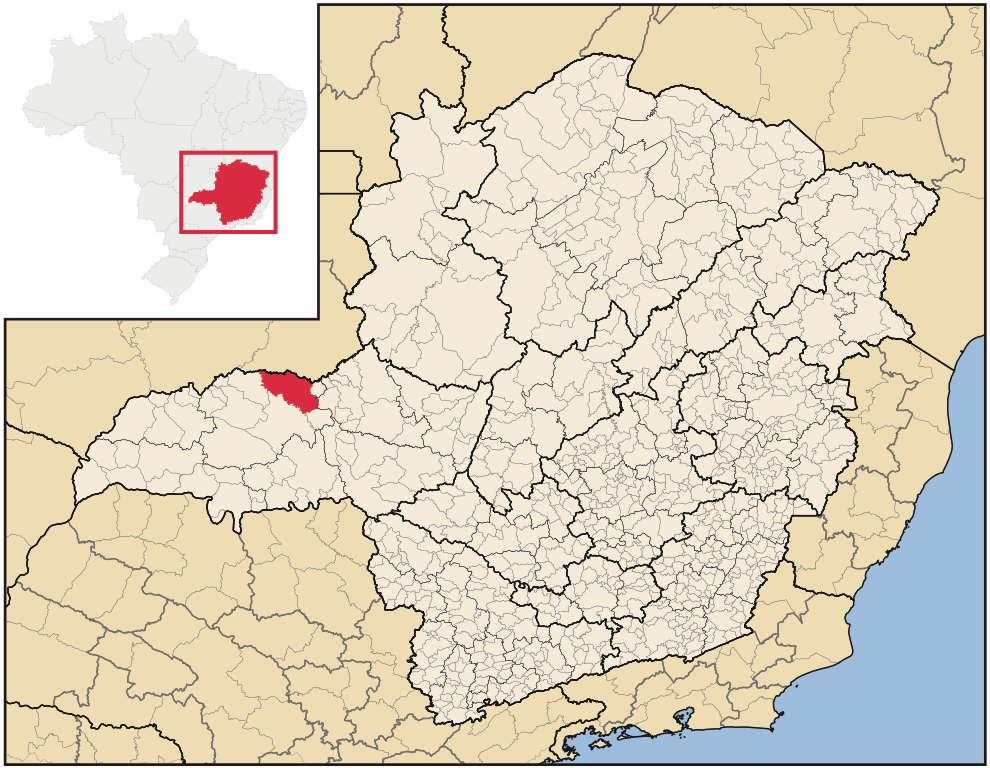

Dados Técnicos - Araguari
| Capacidade Estática |
| 9.000 toneladas |
| Estrutura |
| Terreno – área: 33.934 m². Edificações – área: 3.651 m². Armazém Granelizado para 9.000 t. Unidade para Transbordo com células para 600 t e fluxo operacional de 130 t/h. Balança Rodoviária Chialvo 60 t. Balanças Rodo-ferroviárias Chialvo 120 t. |
| Serviços Ofertados |
| Transbordo Ferroviário; Armazenagem a granel de grãos e cereais; Tratamento fitossanitário de grãos e cereais; Pesagem de veículos. |
| Principais Produtos Armazenados |
| Açúcar Café |
| Endereço |
| Rua São Paulo, s/n.º
- Bairro São Judas Tadeu CEP 38440-000 - Araguari - MG Tel.: (34) 3242-4966 Fax.: (34) 3242-5240 CNPJ: 17.186.370/0084-95 - Insc. Estadual: 035005898.63-96 |
| Gerente | Hudson Luiz Araujo Santos hudson.santos@casemg.gov.br |
| Contato |
| Área de Influência |
| Araguari, Sudoeste de Goiás e Triângulo
Mineiro |
| Certificações |
| GMP B2 |
| Localização |
|
 |